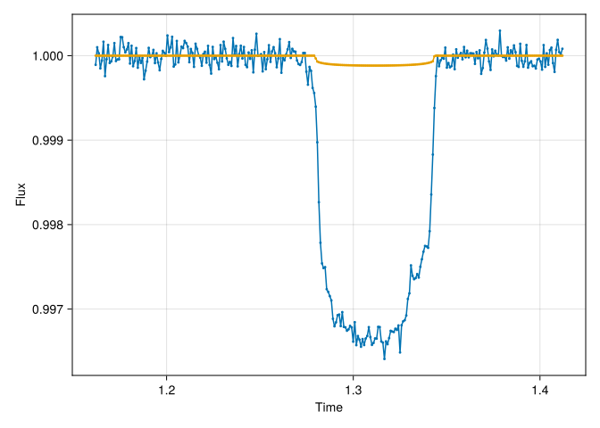

Code
dir = "docs/courses/epss298_DataAnalysis"
if isdir(dir)
cd(dir)
Pkg.activate(".")
Pkg.instantiate()
cd("projects")
endTransiting Exoplanet
Your team detected a planet candidate in the data from the Transiting Exoplanet Survey Satellite (TESS). The data is very noisy, but you are relatively confident the planet is there.
Based on the TESS data, you can predict that the center of the next transit will be between the time t = 1.212 days and t = 1.362 days [Note: t is measured relative to an arbitrary reference time]. The TESS data also tell you that the radius of the planet is between 1% and 10% the radius of the star. Unfortunately, you don’t know where the planet crosses the star, i.e. the impact parameter is unconstrained between 0 and 1. Assume that the orbital period is exactly known to be 3.0 days.
You wrote a proposal and successfully convinced the time allocation committee of the James Webb Space Telescope (JWST) to obtain new very precise data for you. YAY!!!
You receive the data in Project1_JWST_data.csv. The errors are 10-4=0.01% on each data point in the light curve.
From these data, you want to determine new estimates with uncertainties for the transit time, the planet-to-star radius ratio, and the impact parameter.
Batman: https://lkreidberg.github.io/batman/docs/html/index.html
CondaPkg Found dependencies: /Users/zijin/projects/beforerr/docs/courses/epss298_DataAnalysis/CondaPkg.toml CondaPkg Found dependencies: /Users/zijin/.julia/packages/PythonCall/WMWY0/CondaPkg.toml CondaPkg Initialising pixi │ /Users/zijin/.julia/artifacts/d2fecc2a9fa3eac2108d3e4d9d155e6ff5dfd0b2/bin/pixi │ init │ --format pixi └ /Users/zijin/projects/beforerr/docs/courses/epss298_DataAnalysis/.CondaPkg ✔ Created /Users/zijin/projects/beforerr/docs/courses/epss298_DataAnalysis/.CondaPkg/pixi.toml CondaPkg Wrote /Users/zijin/projects/beforerr/docs/courses/epss298_DataAnalysis/.CondaPkg/pixi.toml │ [dependencies] │ batman-package = "*" │ │ [dependencies.python] │ channel = "conda-forge" │ build = "*cpython*" │ version = ">=3.8,<4" │ │ [project] │ name = ".CondaPkg" │ platforms = ["osx-arm64"] │ channels = ["conda-forge"] │ channel-priority = "strict" └ description = "automatically generated by CondaPkg.jl" CondaPkg Installing packages │ /Users/zijin/.julia/artifacts/d2fecc2a9fa3eac2108d3e4d9d155e6ff5dfd0b2/bin/pixi │ install └ --manifest-path /Users/zijin/projects/beforerr/docs/courses/epss298_DataAnalysis/.CondaPkg/pixi.toml WARN Using local manifest /Users/zijin/projects/beforerr/docs/courses/epss298_DataAnalysis/.CondaPkg/pixi.toml rather than /Users/zijin/projects/beforerr/pyproject.toml from environment variable `PIXI_PROJECT_MANIFEST` ✔ The default environment has been installed.
Python: <class 'batman.transitmodel.TransitModel'>
using DrWatson
function TransitParams(; ecc = 0.0, w = 0.0, limb_dark = "quadratic", kwargs...)
params = batman.TransitParams()
for (key, value) in merge(kwargs, @dict(ecc, w, limb_dark))
setproperty!(params, key, value)
end
return params
end
TransitModel(params, time) = pyTransitModel(params, Py(time).to_numpy())
function light_curve(params, time)
m = TransitModel(params, time)
flux = m.light_curve(params)
return PyArray(flux)
endlight_curve (generic function with 1 method)Step 1: Define the physical model Write a function for your physical “forward” model that takes in a vector with these three parameters
Step 2: Define the Bayesian analysis 1. Write the given prior information as a log-prior function 2. Write a log-likelihood function 3. Write a log-probability function
Step 3: Demonstrate solution on a grid
Determine new estimates with uncertainties of the planet-to-star radius ratio and the impact parameter. Fix the transit mid-time to t0 = 1.311544 days. Make a 50x50 grid that explores planet-to-star radius ratios between 0.05275 and 0.53505 as well as impact parameters between 0 and 0.3.
1. Plot the joint posterior distribution with plt.pmeshcolor and mark the best fit with a marker
2. Plot the marginalized posterior distributions for the planet-to-star radius ratio and the impact parameters.
3. Calculate the mean and +/-1 sigma uncertainties for both parameters. Mark the mean value with a solid vertical line in the figure created in Step 3.2. Make the +/-1 sigma uncertainties with dashed vertical lines. Report the best estimates (mean and uncertainty) for both parameters quantitatively.
4. Calculate the covariance matrix that best represents the joint posterior distribution. What is the correlation coefficient between the planet-to-star radius ratios and the impact parameter? Plot the 68% and 95% confidence regions onto the figure created in Step 3.1.
Step 4: Solve the full problem using MCMC and Nested Sampling Determine new estimates with uncertainties of the transit time, the planet-to-star radius ratio, and the impact parameter 1. Using Emcee. Make all possible plots and quantitative assessments to convince the reviewer that your results are converged 2. Using Dynesty. Make all possible plots and quantitative assessments to convince the reviewer that your results are converged
Step 5: Investigate whether you model is a good fit to the data Investigate the residuals. What do you think? Quantitatively and graphically assess whether your model is a good fit to the data.
Step 6: Refine your physical model
1. What could explain your findings in Part 4? Tip: When a distant observer sees a transit of the Earth in front of the sun, would it only be the Earth that is transiting at that time?
2. Code a new physical “forward” model and log-likelihood function that better explains the data.
3. Use Dynesty to find the constraints of both objects. Treat the moon like another body transiting shortly before or after. Use the same prior for the moon. That makes six parameters.
4. Make plots to convince the reviewer that your results are converged
5. Determine quantitatively whether the model justifies applying this more complex model? How confident are you that you detected a moon?
6. Summarize your results for the parameters for each object?
7. Why do you get a multi-modal solution? What could you do to avoid this in this simple example?
Step 7: Describe in a few sentences one example for a problem or data set that you could analogously solve in your research domain?
---
title: Project 1
subtitle: Transiting Exoplanet
engine: julia
---
> Your team detected a planet candidate in the data from the Transiting Exoplanet Survey Satellite (TESS). The data is very noisy, but you are relatively confident the planet is there.
> Based on the TESS data, you can predict that the center of the next transit will be between the time t = 1.212 days and t = 1.362 days [Note: t is measured relative to an arbitrary reference time]. The TESS data also tell you that the radius of the planet is between 1% and 10% the radius of the star. Unfortunately, you don't know where the planet crosses the star, i.e. the impact parameter is unconstrained between 0 and 1. Assume that the orbital period is exactly known to be 3.0 days.
> You wrote a proposal and successfully convinced the time allocation committee of the James Webb Space Telescope (JWST) to obtain new very precise data for you. YAY!!!
> You receive the data in Project1_JWST_data.csv. The errors are 10-4=0.01% on each data point in the light curve.
> From these data, you want to determine new estimates with uncertainties for the transit time, the planet-to-star radius ratio, and the impact parameter.
> Batman: https://lkreidberg.github.io/batman/docs/html/index.html
```{julia}
dir = "docs/courses/epss298_DataAnalysis"
if isdir(dir)
cd(dir)
Pkg.activate(".")
Pkg.instantiate()
cd("projects")
end
```
```{julia}
using CondaPkg
using PythonCall
CondaPkg.add("batman-package")
const batman = pyimport("batman")
const pyTransitModel = batman.TransitModel
```
```{julia}
using CSV, DataFrames
using CairoMakie
path = "./Project1_JWST_data.csv"
data = CSV.read(path, DataFrame)
f = Figure()
plot(f[1,1], data.time, data.flux)
f
```
```{julia}
using DrWatson
function TransitParams(; ecc = 0.0, w = 0.0, limb_dark = "quadratic", kwargs...)
params = batman.TransitParams()
for (key, value) in merge(kwargs, @dict(ecc, w, limb_dark))
setproperty!(params, key, value)
end
return params
end
TransitModel(params, time) = pyTransitModel(params, Py(time).to_numpy())
function light_curve(params, time)
m = TransitModel(params, time)
flux = m.light_curve(params)
return PyArray(flux)
end
```
## Part A
Step 1: Define the physical model
Write a function for your physical "forward" model that takes in a vector with these three
parameters
Step 2: Define the Bayesian analysis
1. Write the given prior information as a log-prior function
2. Write a log-likelihood function
3. Write a log-probability function
```{julia}
t0 = 1.311544
per = 3
rp = 0.01
a = 15
b = 0.1
inc = acosd(b/a)
params = TransitParams(; t0, per, rp, a, inc, u=[0.3, 0.3])
flux = light_curve(params, data.time) #calculates light curve
plot(f[2,1], data.time, flux)
f
```
Step 3: Demonstrate solution on a grid
Determine new estimates with uncertainties of the planet-to-star radius ratio and the impact parameter. Fix the transit mid-time to t0 = 1.311544 days. Make a 50x50 grid that explores planet-to-star radius ratios between 0.05275 and 0.53505 as well as impact parameters between 0 and 0.3.
1. Plot the joint posterior distribution with plt.pmeshcolor and mark the best fit with a marker
2. Plot the marginalized posterior distributions for the planet-to-star radius ratio and the impact parameters.
3. Calculate the mean and +/-1 sigma uncertainties for both parameters. Mark the mean value with a solid vertical line in the figure created in Step 3.2. Make the +/-1 sigma uncertainties with dashed vertical lines. Report the best estimates (mean and uncertainty) for both parameters quantitatively.
4. Calculate the covariance matrix that best represents the joint posterior distribution. What is the correlation coefficient between the planet-to-star radius ratios and the impact parameter? Plot the 68% and 95% confidence regions onto the figure created in Step 3.1.
## Part B
Step 4: Solve the full problem using MCMC and Nested Sampling
Determine new estimates with uncertainties of the transit time, the planet-to-star radius ratio, and
the impact parameter
1. Using Emcee. Make all possible plots and quantitative assessments to convince the reviewer that your results are converged
2. Using Dynesty. Make all possible plots and quantitative assessments to convince the reviewer that your results are converged
Step 5: Investigate whether you model is a good fit to the data
Investigate the residuals. What do you think? Quantitatively and graphically assess whether your model is a good fit to the data.
Step 6: Refine your physical model
1. What could explain your findings in Part 4? Tip: When a distant observer sees a transit of the Earth in front of the sun, would it only be the Earth that is transiting at that time?
2. Code a new physical "forward" model and log-likelihood function that better explains the data.
3. Use Dynesty to find the constraints of both objects. Treat the moon like another body transiting shortly before or after. Use the same prior for the moon. That makes six parameters.
4. Make plots to convince the reviewer that your results are converged
5. Determine quantitatively whether the model justifies applying this more complex model? How confident are you that you detected a moon?
6. Summarize your results for the parameters for each object?
7. Why do you get a multi-modal solution? What could you do to avoid this in this simple example?
Step 7:
Describe in a few sentences one example for a problem or data set that you could analogously solve in your research domain?
## Reference
- [DACE tutorial on photometry](https://dace.unige.ch/tutorials/?tutorialId=32)